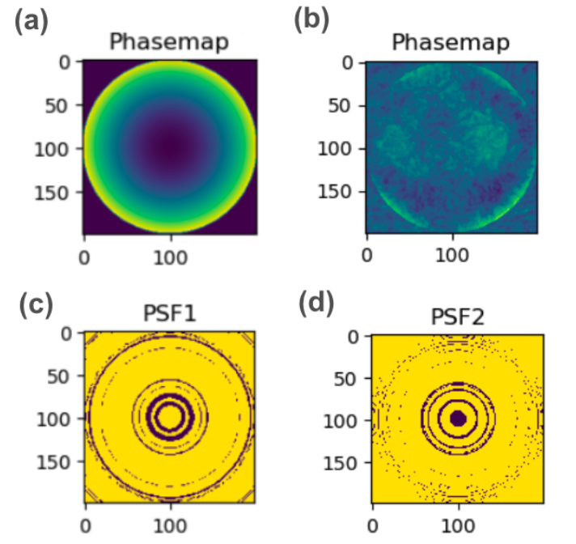

|
Adam Cahall Hi, I'm Adam! I am a current senior at Cornell University studying computer science with a strong interest in machine learning. I am especially excited about applying machine learning to impactful problems in computational imaging, computer vision, and natural language processing. I will be pursuing an M.S. in Computer Science at Georgia Tech starting Fall 2025. Currently, I am working with Kristina Monakhova on computational imaging techniques for estimating depth with event cameras. Previously, I worked with Thorsten Joachims on developing a novel training method for Large Language Models that uses implicit human feedback to align models with user preference. Outside of research, I enjoy playing Ultimate Frisbee, pickleball, basketball, and the electric bass. |

|
Publications |
|
Coactive Learning for Large Language Models
Aaron David Tucker, Kianté Brantley, Adam Cahall, Thorsten Joachims Internation Conference on Machine Learning (ICML), 2024 We propose coactive learning, which makes use of implicit human feedback found in user-edited LLM-generated text, as a model and feedback mechanism for training LLMs. |
|
|
Using Simulation to Study The Impact of Covid-19 Policies on The Availability of Childcare
Adam Cahall, Jasmine Eng, Jane Guo, Bentley Hilbert, Jamol Pender Winter Simulation Conference, 2023 We derive probabilistic models for COVID-19 spread in childcare centers and run simulations to evaluate current and potential future health and safety protocols. |
Industry Experiences |
|
|
Amazon
Software Development Engineer Intern
May 2024 - August 2024
Worked on the Selling Partner Services team. My project focused on redesigning the computation and storage of a series of seller-facing statistics on Amazon using AWS Lambda, DynamoDB, SQS, and SNS. These changes will reduce ongoing cost by 40% vs. current system and reduce latency by 60% for a page visited by thousands of Amazon sellers daily. |
Projects |
|  |
Event-based 3D Motion Detection with Depth-Dependent PSFs
Final Project for CS 6662 (Computational Imaging) Report / Video We propose an end-to-end pipeline for jointly optimizing a hardware component (phase mask) and a convolutional neural network for 3D object tracking with event cameras. This project was done in collaboration with PhD student Haley Lee. We are currently extending upon this work in collaboration with Prof. Kristina Monakhova. |
|
CNN-inspired Graph Kernel Neural Networks
Final Project for CS 6850 (The Structure of Information Networks) Report We extend existing Graph Kernel Neural Network models with CNN-inspired components, including pooling and attention, and apply them to the graph classification problem. This project was done in collaboration with fellow undergraduate Avi Ruthen. |